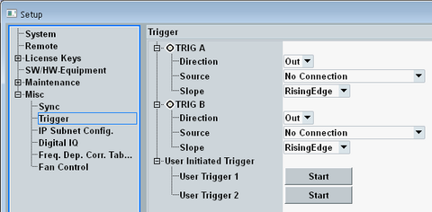

This dialog configures the trigger connectors on the rear panel of the instrument and allows you to initiate the generation of a "User Initiated Trigger" signal.

- An input trigger signal is used to synchronize an R&S CMW measurement to an external event. Example: A DUT providing a frame-periodic RF signal generates an additional trigger signal to indicate its frame timing.
The related trigger source strings are "Base1: External TRIG A" and "Base1: External TRIG B". - An output trigger signal is generated by the R&S CMW to synchronize external devices.
You cannot route an incoming trigger signal to the other trigger output, for example route TRIG A input to TRIG B output.
Selection of input or output trigger signal at the connector.
Remote command:Source for the output trigger signal. "No Connection" means that no output trigger signal is fed to the trigger connector.
Most trigger sources depend on the installed options. For example, the ARB generator provides several output trigger signals to synchronize external devices to a processed waveform file.
Remote command:Slope to be used for output trigger signals. The trigger event can either be marked by a rising edge or by a falling edge.
Remote command:A user-initiated trigger signal is useful if you want to trigger several applications simultaneously and the absolute trigger timing is irrelevant.
You can, for example, start waveform files (ARB files) in several GPRF generators simultaneously to generate a MIMO signal. To do so, select one of the user-initiated triggers as trigger source in the relevant GPRF generator instances and initiate the trigger event by pressing the "Start" button.
Related trigger source strings: "Base1: User Trigger 1" and "Base1: User Trigger 2"
There is also a continuous trigger signal with a trigger pulse every 10 ms. It can also be used for synchronization of several GPRF generators. Related trigger source string: "Base1: Cont.10ms Trigger".
The user-initiated trigger signals and the continuous 10 ms trigger signal cannot be routed to TRIG A or TRIG B.
Remote command: